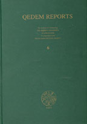

 |
CHAPTER ONE
INTRODUCTION
This volume is the second in a series of final reports,
presenting the results of the excavations carried out at Yoqne'am between 1977 and 1987. The first volume (Yoqne'am I), published in 1996, was devoted to the later periods excavated at the site (Strata VII-I), from the Ottoman to the Hellenistic period. The present volume reports on the Iron Age and Persian period strata (XVIII-VIII).
The Iron Age strata at Yoqne'am (XVIII-XI, most of which are divided into several sub-phases) constitute the main theme of the present discussion, since they include the bulk of the material. Furthermore, the presentation of these srata and the analysis of the material uncovered in them make a significant contribution to the archaeological picture of that period in the Land of Israel.
In this respect, the following aspects are noteworthy:
The almost uninterrupted sequence of Iron Age
strata-eight in all-uncovered at Y oqne'am, spanning the twelfth/eleventh centuries BCE (the Iron Age I) through the last third of the eighth century BCE (the Iron Age IIB/III);
The discovery and partial excavation of a water system, one of the very few in this country securely dated to the Iron Age IIA (the tenth century BCE);
The uncovering of two superimposed defense systems, the earlier a casemate wall and the later consisting of two parallel walls separated by a narrow passage (termed "the gallery wall"). The latter appears to be unique in this country so far (with a possible exception at Gibeon);
The dense stratigraphic sequence resulted, among other things, in the recovery of a relatively large number of ceramic assemblages originating in loci of secure stratigraphic attribution. This made possible a detailed study of the development of various ceramic types throughout the twelfth/eleventh-late eighth centuries BCE (from the Iron Age I through the Iron Age IIB/III) and the rate of their rise and decline in "popularity" (measured statistically). Of special importance in this respect is the picture emerging with regard to the development of the ceramic typology throughout the tenth and ninth centuries. Most instructive is the comparative study of the Yoqne'am ceramic types with those uncovered in neighboring sites (see map), such as Tell Qiri (a satellite site of Yoqne'am), Megiddo, Tel Jezreel and Taanach, all in the Jezreel Valley, Rosh Zayit, located in the Lower Galilee, sites in the northern coastal area, such as Tell Keisan and Tel Dor, and even with more distant contemporary sites, such as Hazor and Dan in the Upper Galilee. The results of this study are of great significance with regard to the controversy about the "traditional" versus "low" chronology of the Iron Age II (Finkelstein 1996; Ben-Tor 2000). In our opinion, it clearly supports the "traditional" chronology of that period (Zarzecki-Peleg 1997a).
|